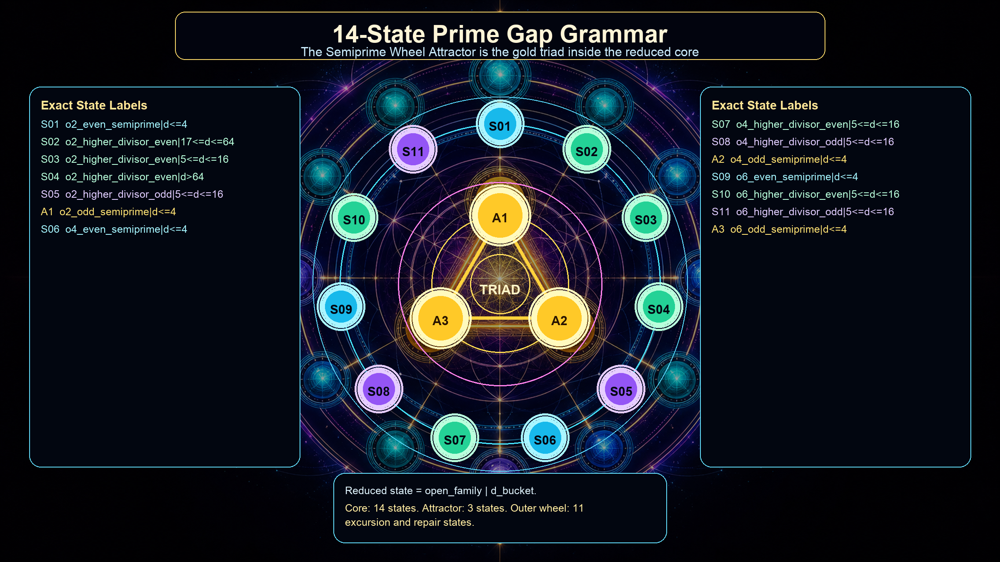
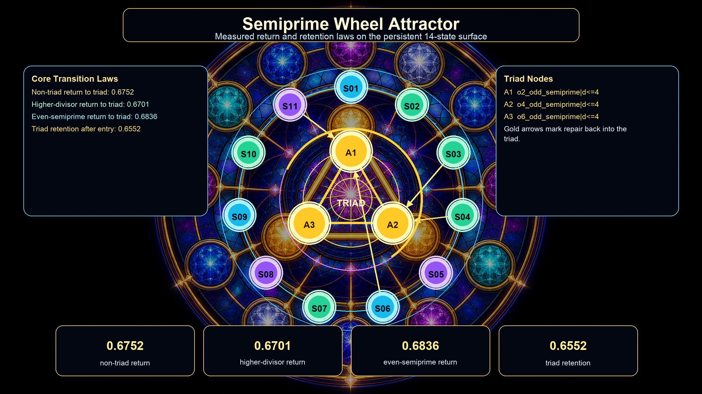
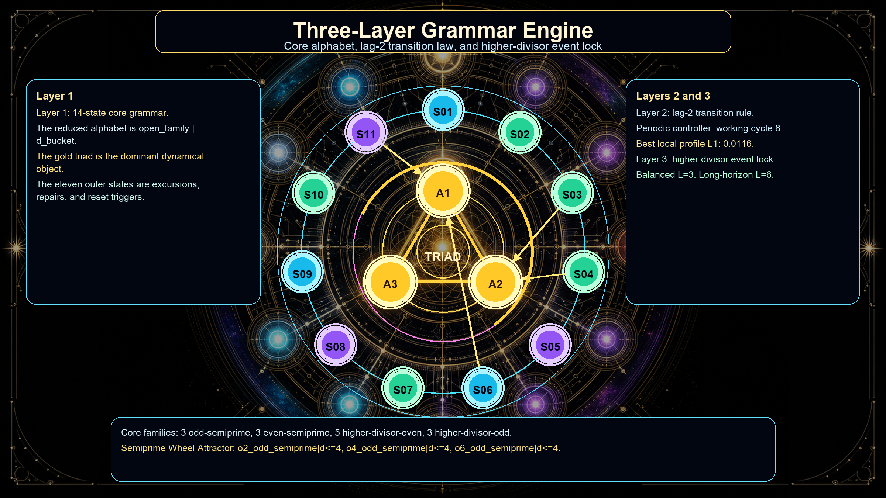

Each plate uses an AI-generated sacred-geometry background and a deterministic
annotation layer. The labels come from the frozen v1.0 grammar summary:
a 14-state reduced alphabet with the three gold states forming the
Semiprime Wheel Attractor.

Core alphabet.All 14 exact state labels are listed in side legends. The geometry uses short node IDs to keep the center readable.

Return laws.The gold triad carries the attractor. The bottom blocks show the measured return and retention shares.

Three-layer engine.The same 14-state wheel is annotated as core grammar, lag-2 transition law, and higher-divisor event-lock controller.